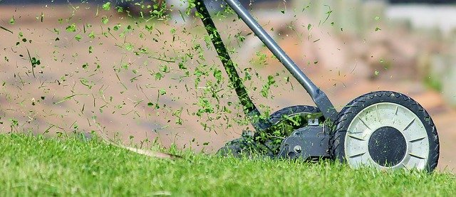

Je m'appelle Julie
Mes études consistent en un DEP en procédés infographiques et une RAC en infographie, un DEP en cuisine d'établissement, un DEP en service de la restauration et j'étudie aussi au Baccalauréat en enseignement professionnel à l'Université de Sherbrooke.

Je pratiquais beaucoup de sports plus jeune, mais présentment je pratique le golf, la marche et la raquette. Je pratique la tonte de mon gazon avec une tondeuse manuelle sur 52 000 pi2.
| Nom de l'activité | Type d'activité | Fréquence de l'activité |
| Regarder des tutoriels | Apprentissage | 3-4 fois par semaine |
| Lire | Apprentissage | Tous les jours | Modèles réduits | Artisanat | 3-4 fois par année |
| Tricoter | Artisanat | Pendant les congés |
| Cuisiner | Détente | Tous les jours | Voici quelqu'uns de mes loisirs quand j'ai du temps pour en pratiquer ;) |
Je rêve de pouvoir être autosuffisante.